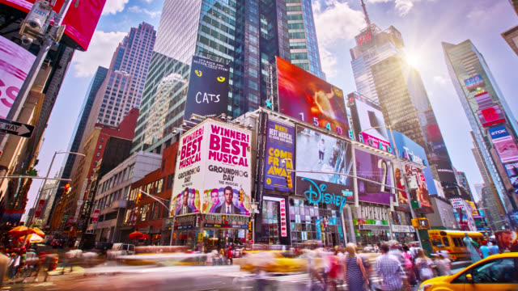

New York City Shopping Guide
New York City has a well-deserved reputation as one of the world's great shopping destinations.
With its world-renowned department stores, boutique shops, high-fashion and outlet centers
Midtown
The Midtown shopping district, which includes the Times Square area, is chock-full of the city's must-visit stores.
There's Macy's on 34th and Broadway, a massive department store that's home to the famous Thanksgiving Day Parade.
Saks Fifth Avenue is an upscale department store that has amazing window decorations for the holidays. Tiffany's on 57th and Fifth Avenue is frequented by locals and tourists, it is also a great place to window shop. In this area, Niketown boasts a huge selection of sneakers and wear. The Coach House flagship store is located here and has beautiful leather goods and an especially a great selection of hand bags.
The Disney Store, LEGO Store, Midtown Comics, American Girl Place, and MoMa Design are also worth a visit.

Lower Manhattan and the Financial District

Lower Manhattan and the Financial District is a prime shopping locale due to stores like Century 21, a discount department store that attracts people from across the tristate area of New York, New Jersey, and Connecticut.
Century 21 displays new and discounted inventory almost daily. Arrive early to see the newest merchandise. Westfield, located in the 4WTC building, is a newer shopping mall that offers food, clothing, jewelry, and cosmetics. The upper floors are home to Eataly, an Italian food lover's dream.
SoHo
SoHo has been trendy for decades, it's the tony place to go shopping in New York City.
SoHo runs from Broadway to Sixth Avenue, and from Canal up to Houston. Once an artist mecca, the remnants of its past are still visible in its many art galleries and cafes that line each street.
SoHo is where you’ll find exclusive high-end boutiques. Bloomingdales has its flagship store uptown, but there’s a sister branch on Broadway that’s quite popular.


Union Square / Flatiron District


The Union Square / Flatiron District draws native New Yorkers and tourists alike. Anchored by the Union Square subway station (one of the main arteries that brings shoppers from around the city)..
The Strand is quintessential New York City tourists, locals, and students go elbow to elbow looking in bins and shelves of thousands of books. This area is also home to many large stores, such as Nordstrom Rack and Paragon Sports, as well as countless smaller boutique stores.